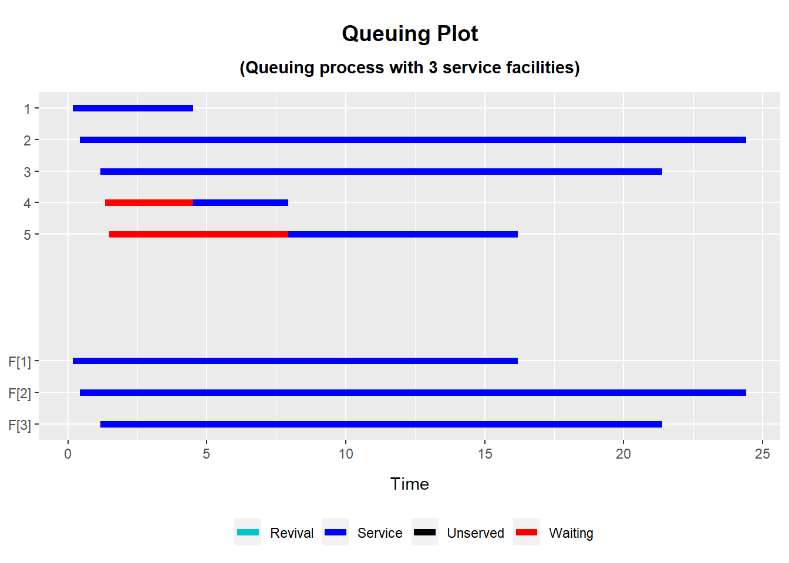
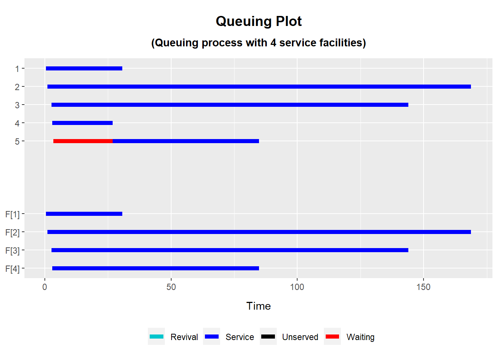
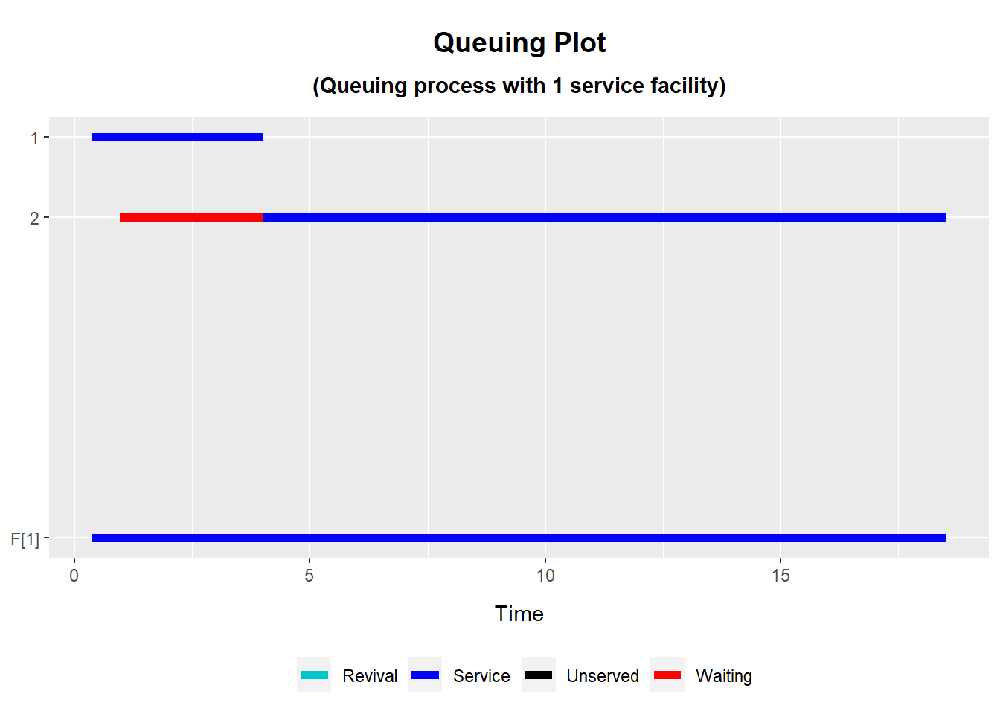
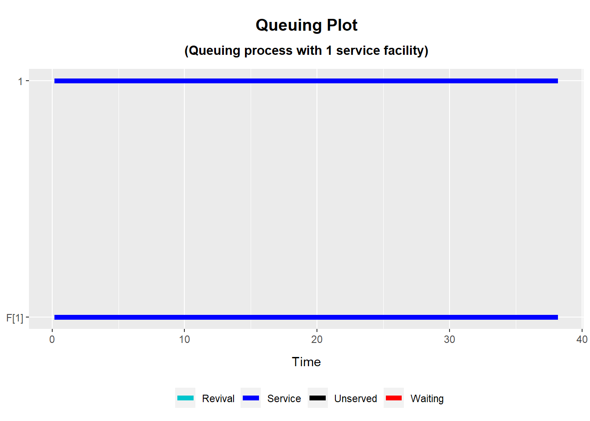
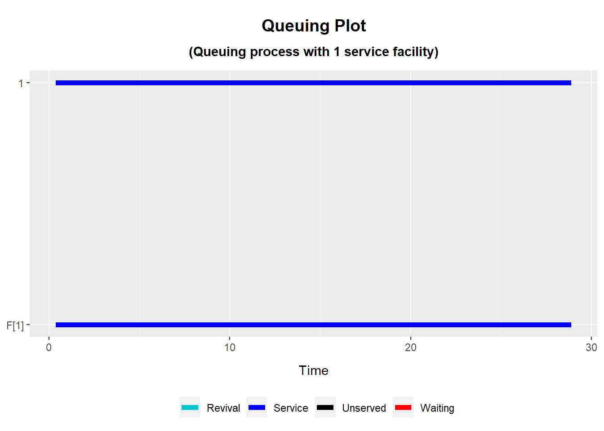

# level of severity: very mild# arrival rate 5/day# service mean time 24 hours# number of beds 3set.seed(2023)lambda <-5/24# avg number of arrivals per day K <-5# users of the facilityARRIVE <-cumsum(rexp(K, rate =1/lambda))mu <-24use_time <- mu *runif(K)library(utilities)QUEUE <-queue(arrive = ARRIVE, use.full = use_time,n =3)plot(QUEUE)

summary(QUEUE)
Summary Statistics for a Queuing Process
Model of an amenity with 3 service facilities
Users are allocated to facilities on a 'first-come first-served' basis
----------------------------------------------------------------------
wait use unserved use.full use.prop
Mean 1.919235 12.042922 0 12.042922 1
Std.Dev 2.869329 9.448364 0 9.448364 0
Quantile[0.00] 0.000000 3.423577 0 3.423577 1
Quantile[0.25] 0.000000 4.330322 0 4.330322 1
Quantile[0.50] 0.000000 8.276361 0 8.276361 1
Quantile[0.75] 3.169252 20.201788 0 20.201788 1
Quantile[1.00] 6.426925 23.982559 0 23.982559 1
Patients with the mild level of stroke typically stay for 5 to 7 days, however, some of the patients may get discharged early. Thus, I am making the assumption here that most of the patients stay for 5 to 7 beds. I have made up the following scenario:
A total of number of patients with the mild level of stroke are 11. Of these 5 patients stay for seven days, 2 for six days, 2 patients stay for 5 days, 1 patient stays for 4 days and 1 patient for 3 days. Let’s make an assumptions these numbers are based on some past experiences, thus hospital wards allocate greater number of beds to patients who are likely to stay for seven days.
1 patient arriving per day with mild level of stroke is required to stay for 3 days – \(3 \times 24 = 72\) hours:
1 patient arriving per day with the mild level of stroke that is required to stay in the ward for 4 days – \(4 \times 24 = 96\) hours:
2 patient arrive per day with the mild level of stroke and are required to stay for 5 days – \(5 \times 24= 120\) hours:
2 patient is required to stay for 6 days \(6 \times 24=144\) hours:
5 patient with the mild level of stroke is required to stay for 7 days in the ward.
library(utilities)library(tidyverse)# level of severity: mild# required length of stay: 7 days (7*24) for 5 patients# arrival rate 11 per day (11/24)# service mean time for these patients = 7 days (7*24)# k=5 users staying for seven days# number of beds allocated 4set.seed(2023)lambda1 <-11/24# avg number of arrivals per day K1 <-5# users of the facilityARRIVE1 <-cumsum(rexp(K1, rate =1/lambda1))mu1 <-168use_time1 <- mu1 *runif(K1)library(utilities)QUEUE1 <-queue(arrive = ARRIVE1, use.full = use_time1,n =4)plot(QUEUE1)

summary(QUEUE1)
Summary Statistics for a Queuing Process
Model of an amenity with 4 service facilities
Users are allocated to facilities on a 'first-come first-served' basis
----------------------------------------------------------------------
wait use unserved use.full use.prop
Mean 4.72001 84.30045 0 84.30045 1
Std.Dev 10.55426 66.13855 0 66.13855 0
Quantile[0.00] 0.00000 23.96504 0 23.96504 1
Quantile[0.25] 0.00000 30.31225 0 30.31225 1
Quantile[0.50] 0.00000 57.93453 0 57.93453 1
Quantile[0.75] 0.00000 141.41252 0 141.41252 1
Quantile[1.00] 23.60005 167.87792 0 167.87792 1
# level of severity: mild# required length of stay: 6 days (6*24) for 2 patients# arrival rate 11 per day (11/24)# service mean time for these patients = 6 days (6*24)# k=2 users staying for six days# number of beds allocated 1set.seed(2023)lambda2 <-11/24# avg number of arrivals per day ()K_p2 <-2# users of the facilityARRIVE2 <-cumsum(rexp(K_p2, rate =1/lambda2))mu2 <-144use_time2 <- mu2 *runif(K_p2)library(utilities)QUEUE_2 <-queue(arrive = ARRIVE2, use.full = use_time2,n =1)plot(QUEUE_2)
summary(QUEUE_2)
Summary Statistics for a Queuing Process
Model of an amenity with 1 service facility
Users are allocated to facilities on a 'first-come first-served' basis
----------------------------------------------------------------------
wait use unserved use.full use.prop
Mean 1.8954150 10.891915 0 10.891915 1
Std.Dev 2.6805217 9.214317 0 9.214317 0
Quantile[0.00] 0.0000000 4.376409 0 4.376409 1
Quantile[0.25] 0.9477075 7.634162 0 7.634162 1
Quantile[0.50] 1.8954150 10.891915 0 10.891915 1
Quantile[0.75] 2.8431226 14.149668 0 14.149668 1
Quantile[1.00] 3.7908301 17.407421 0 17.407421 1
# level of severity: mild# required length of stay: 5 days (5*24) for 2 patients# arrival rate 11 per day (11/24)# service mean time for these patients = 5 days (5*24)# k=2 users staying for five days# number of beds allocated 1set.seed(2023)lambda3 <-11/24# avg number of arrivals per day ()K3 <-2# users of the facilityARRIVE3 <-cumsum(rexp(K3, rate =1/lambda3))mu3 <-120#120 hours 24*5 5 daysuse_time3 <- mu3 *runif(K3)library(utilities)QUEUE3 <-queue(arrive = ARRIVE3, use.full = use_time3,n =1)plot(QUEUE3)

summary(QUEUE3)
Summary Statistics for a Queuing Process
Model of an amenity with 1 service facility
Users are allocated to facilities on a 'first-come first-served' basis
----------------------------------------------------------------------
wait use unserved use.full use.prop
Mean 1.5307143 9.076596 0 9.076596 1
Std.Dev 2.1647569 7.678597 0 7.678597 0
Quantile[0.00] 0.0000000 3.647008 0 3.647008 1
Quantile[0.25] 0.7653571 6.361802 0 6.361802 1
Quantile[0.50] 1.5307143 9.076596 0 9.076596 1
Quantile[0.75] 2.2960714 11.791390 0 11.791390 1
Quantile[1.00] 3.0614285 14.506184 0 14.506184 1
# level of severity: mild# required length of stay: 4 days (7*24) for 1 patient# arrival rate 11 per day (11/24)# service mean time for these patients = 4 days (4*24)# k=5 users staying for seven days# number of beds allocated 4set.seed(2023)lambda4 <-5/24# avg number of arrivals per day ()K4 <-1# users of the facilityARRIVE4 <-cumsum(rexp(K4, rate =1/lambda4))mu4 <-96# four daysuse_time4 <- mu4 *runif(K4)library(utilities)QUEUE4 <-queue(arrive = ARRIVE4, use.full = use_time4,n =1)plot(QUEUE4)

summary(QUEUE4)
Summary Statistics for a Queuing Process
Model of an amenity with 1 service facility
Users are allocated to facilities on a 'first-come first-served' basis
----------------------------------------------------------------------
wait use unserved use.full use.prop
Mean 0 38.02752 0 38.02752 1
Std.Dev NA NA NA NA NA
Quantile[0.00] 0 38.02752 0 38.02752 1
Quantile[0.25] 0 38.02752 0 38.02752 1
Quantile[0.50] 0 38.02752 0 38.02752 1
Quantile[0.75] 0 38.02752 0 38.02752 1
Quantile[1.00] 0 38.02752 0 38.02752 1
set.seed(2023)lambda5 <-11/24# avg number of arrivals per day ()K5 <-1# users of the facilityARRIVE5 <-cumsum(rexp(K5, rate =1/lambda5))mu5 <-72# 72 hours - 3 days - mean service timeuse_time5 <- mu5 *runif(K5)library(utilities)QUEUE5 <-queue(arrive = ARRIVE5, use.full = use_time5,n =1)plot(QUEUE5)

summary(QUEUE5)
Summary Statistics for a Queuing Process
Model of an amenity with 1 service facility
Users are allocated to facilities on a 'first-come first-served' basis
----------------------------------------------------------------------
wait use unserved use.full use.prop
Mean 0 28.52064 0 28.52064 1
Std.Dev NA NA NA NA NA
Quantile[0.00] 0 28.52064 0 28.52064 1
Quantile[0.25] 0 28.52064 0 28.52064 1
Quantile[0.50] 0 28.52064 0 28.52064 1
Quantile[0.75] 0 28.52064 0 28.52064 1
Quantile[1.00] 0 28.52064 0 28.52064 1